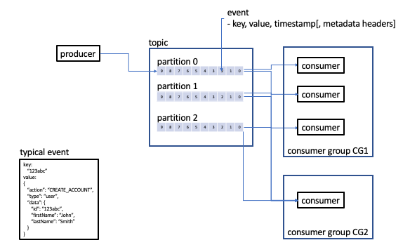

Kafka
- Kafka is a distributed event streaming platform
- It is run as a cluster on one or more servers that can span multiple datacenters
- Written in Java and Scala
- Originally developed at LinkedIn
- Communication between clients and servers is done via TCP/IP
- Clients can be written in many languages including C/C++, Python, etc.

Events, Topics, Partitions
- Each event has: key, value, timestamp and optional metadata headers
- Events are organized and durably stored in topics
- A topic is a durable ordered collection of events
- Topics are always multi-producer and multi-subscriber. I.e. a topic can have zero, one or many publishers. Likewise, a topic can have zero, one or many subscribers
- Each topic contains one or more partitions
- Events with the same key are written to the same partition
- Each event can be read as often as needed.
- You define how long Kafka should retain your events thru a per-topic configuration setting
- Kafka guarantees that any consumer of a given topic-partition will always read the partition's events in exactly the same order as they were written
- For each topic, the Kafka cluster maintains a partitioned log
- Each partition is an ordered, immutable sequence of events that is continually appened to
- Each event is assigned a sequential id (called an offset) which uniquely identifies the event within the partition
- The Kafka cluster durably persists all published events using a configurable retention period
- For example if the retention policy is set to 2 days, the event is available for consumption for 2 days after it is published. After that time, it is discarded to free up space.
Partitions
- Each partition is replicated across a configurable number of servers
- Each partition has one server which is deemed the leader and one or more servers which are followers
- The leader handles all read and write requests for the partition
- The followers passively replicate the leader
- If the leader fails, one of the followers will become the leader
- Each server acts as a leader for some partitions and a follower for others such that the load is well balanced
Producers and Consumers
- Producers - client applications which publish Kafka events
- Consumers - client applications which subscribe to Kafka events
- Producers and Consumers are fully de-coupled from each other
Producers
- The producer is responsible for choosing the partition within the topic
Consumers
- Consumers label themselves with a consumer group name
- Each record published to a topic is delivered to one consumer instance within a subscribing consumer group - allowing for load balancing the consumers
API's
Kafka has four core API's:- The Producer API allows an applciation to publish a stream of records to one or more Kafka topics.
- The Consumer API allows an applciation to subscribe to one or more topics and process the streams of records produced to them.
- The Streams API allows an applciation to act as a stream processor consuming an input stream from one or more topics and producing an output stream to one or more output topics, transforming the input streams to output streams
- The Connector API allows for reusable producers or consumers - e.g. a connector to a relational database which captures each change to a table